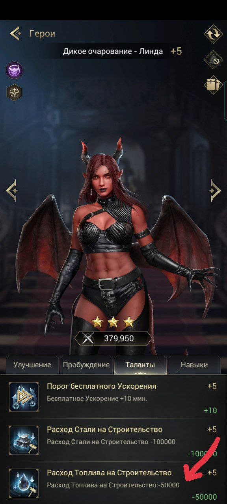

Прокачка войск
Одной из важных частей игры является прокачка войск. Первое и самое важное - нельзя качать все войска равномерно! Без очень большого доната это лишь потраченные впустую ресурсы (усилители, осколки, дары святой и ресурсы на технологии), которые крайне ограничены.Моноотряды рулят: вкладываясь в один конкретный тип войск достичь хороших статов без вливавания денег возможно, поэтому важно, чтобы весь ваш марш состоял из того типа войск, который вы качаете.
Теперь к выбору войск. Всего есть три типа: пехота (пехи), стрелки и наездники (наезды) (транспорт исполняет только роль собирателя ресурсов, его качать не надо!). У каждого типа есть свои сильные и слабые стороны.
Пехота
Этот тип войск очень хорошо показывает себя в атаке на других игроков и в защите от них. Эти юниты получают урон первыми, но с хорошей прокачкой их сложно пробить. Имеют слабость к наездником (то есть наездники наносят пехоте больший урон, нежели стрелки при прочих равных). Сложность прокачки - тяжёлая.
Наездники
Этот тип войск немного более распространён среди игроков. Одинаково хорошо наносят урон как и в атаках на квилл/падших, так и в атаках на других игроков. Эти юниты имеют самую быструю скорость передвижения по карте и получают урон вторыми. Имеют слабость к стрелкам. Сложность прокачки - лёгкая.
Стрелки
Самый распространнёный тип войск среди игроков. Юниты этого типа получают урон самыми последними последними. Сложность прокачки - средняя.
После выбора войск важно правильно сформировать основной марш с этими войсками. Для облегчения этого процесса существуют шаблоны маршей в бараках (один из них указан красной стрелкой):

Дух зверя должен быть А-класса, подходящего тому типу войск, который качается (Полярный Ярл для пехоты, Пустынный охотник для наездников, Ловец шторма для стрелков), если его нет, берётся Инферно с максимальной прокачкой. Потом начинается подбор героев - здесь важно брать героев, которые усиливают именно прокачиваемый тип войск, а не юнитов или другой тип войск, это можно посмотреть тут (на первой картинке герой, которого можно взять в основной марш, на второй - герой, которого брать не нужно):


Есть эталонные наборы героев в марш для каждого типа войск:
Пехота -
 Леонардо, Мэтт, Седрик, Дональд и Алтея
Леонардо, Мэтт, Седрик, Дональд и АлтеяНаездники - Шерил, Офелия, Кайн, Каролина и Бивис
Стрелки -
 Барбара, Рильф, Виктория, Воланд и Аннализа
Барбара, Рильф, Виктория, Воланд и АннализаЕсли этих героев нет, то недостающих можно заменить героями с менишим количеством звёзд, но обязательно с усилением конкретного выбранного типа войск. Потом ползунком выбираем на максимум прокачиваемый тип войск максимального тира (с самой большой римской цифрой в нижней правой части кружка с картинкой-обозначением войска):
(показано красными стрелками)
Для сохранения выбранного марша нажимаем внизу кнопку "Сохранить строй". В следующий раз при отправке марша нужно нажать на кнопку с номером шаблона, за которым был сохранён марш, для его автоматической сборки, после чего можно сразу нажимать кнопку "в бой".
Самое важное в непосредственно прокачке войск - улучшать снаряжение, самоцветы, кристаллы, навыки святой, навыки владыки и исследовать технологии в академии, которые улучшают размер марша и атаку, защиту, оз выбранного типа юнитов. Примеры улучшения снаряжения, самоцветов, кристаллов и навыков святой (да, можно иметь минимальный уровень прокачки и у остальных типов войск, но никогда нельзя это делать в ущерб прокачке основного типа войск):


В навыках владыки при выборе ветки в ветке "Сражения" выбирается та, которая на основное прокачиваемое войско:

Прокачка героев
Герои делятся на четыре типа: герои для пехоты, для стрелков, для наездников и герои развития. На картинке указаны стрелками в том же порядкеОчень важный момент состоит в том, что принадлежность героев считается по тому, какому типу войск у них тактический манёвр (у развития это транспорт). Поэтому необходимо проверять, даёт ли этот герой усиление юнитам или именно типу войск, прежде, чем его прокачивать и ставить в марш
На картинках верхние стрелки указывают на принадлежность к типу войск, а нижние показывают, кого усиляют эти герои:
В первую очередь пробуждаются (через получаение фрагментов героя) герои, усиливающие именно тип юнитов, который качается, и герои развития, именно в таком порядке. Причём важно отметить, что всех героев нет необходимости улучшать до их максимального уровня, достаточно поднять их до уровня, на котором открыты все таланты.
Они указаны стрелками:


Улучшать до максимального уровня нужно тех героев, которые используются на арене, в кампании и забытых землях. Но так как выгодно использовать героев с максимальным пробуждением и звездным уровнем,то обычно эти герои частично совпадают с теми, что стоят в марше. Фрагменты геров с максимальным пробуждением можно обменивать на очки героя, за которые можно купить фрагменты героя в таверне. (картинка рюкзака и картинка обмена в таверне)
Еженедельные ивенты
Для достижения высокого рейтинга в любом ивенте нужно копить абсолютно всё: сундуки, письма с призами, карточки героев, дары святой. На получение каждого вида вида материала есть свой ивент.У каждого типа войск есть герои, которые можно получить только через награды за ивенты (закрытие этапов и/или глобальный рейтинг), поэтому в эти ивенты нужно вкладываться усиленно в зависимости от качаемого типа войск.
Еженедельно с четверга по воскресенье проходит ивент "Зачистка", каждый день - свой этап со своими доступными героями. За него можно получить неплохие призы, не сильно напрягаясь, но очень многое зависит от удачи.
В субботу и воскресенье проходит "Атака титанов", источник очков - трата жёлтой энергии (в меньшей степени) и победа над квиллами (градация очков в зависимости от уровня квиллы), поэтому необходимо ходить на квилл уровнем 31+, чтобы и самому получать хорошие очки, и приносить их альянс.
В восресенье проходит "Осада Адского пламени". Остальные ивенты делятся по неделям.
Чётная неделя
Это неделя славного владыки, описание этого ивента есть отдельно. Вторник - "Нашествие падших". Нужно кидать подкрепление другим игрокам, не в ущерб себе, и на защиту крепости альянса, больше делать ничего не надо. Призы - ресурсы и ускорители.Четверг - "Нашествие падших". Нужно кидать подкрепление другим игрокам, не в ущерб себе, и на защиту крепости альянса, больше делать ничего не надо. Призы - ресурсы и ускорители. "Начертание рун". Ивент на получение осколков рун, редких и обычных усилитетей рун
Нечётная неделя
Понедельник - "Путь героя". Ивент на получение фрагментов героев: обмен карточек, наём в таверне, обмен очков героя в таверне на фрагменты героя. Наградой за рейтинг на этом ивенте являются карточки героя, в которых можно получить Викторию и АлтеюВторник - "Сбор провизии". Ивент на сбор ресурсов и кровавой яшмы. Наград за рейтинг нет. "Развитие крепости". Ивент на ускорение стройки, обучения юнитов и исследования технологий. Наградой за рейтинг на этом ивенте являются карточки героя, в которых можно получить Викторию и Алтею.
"Дрессировка зверей". Ивент на улучшение Духов зверей и трату эссенции. Награда за рейнг - эссенция и энергия душ (которую можно обменять на духов зверей А-класса). "Оборона владений". Ивент, по котором надо уничтожать падших на кругах всем альянсом. Призы получают все, даже если игрок не участвовал.
Среда - "Усиление снаряжения". Ивент на получение осколков снаряжения, редких и обычных усилителей снаряжения и магической руды. Наградой за рейтинг на этом ивенте являются карточки героя, в которых можно получить Викторию и Алтею
Четверг - "Святая и кристаллы". Ивент на получение даров святой (их нужно открыть из рюкзака) и осколков кристаллов, редких и обычных усилителей кристаллов. Наградой за рейтинг на этом ивенте являются карточки героя, в которых можно получить Викторию и Алтею.
"Оборона владений". Ивент, по котором надо уничтожать падших на кругах всем альянсом. Призы получают все, даже если игрок не участвовал. "Пополнение рядов". Ивент на улучшение и обучение войск. Наград за рейтинг нет.
Пятница - "Улучшение самоцветов". Ивент на получение осколков самоцветов, редких и обычных усилителей самоцветов, ещё больше очков даёт всё для ультрасамоцветов, которые можно получить только в магазине Славы за очки с арены - Славный бой. Суббота и воскресенье - "Алмазный мастер". Ивент на трату алмазов. Награда за рейтинг - фрагменты Виктории. "Специализация". В субботу необходимо выбрать, за какие действия будут зарабатываться очки (развитие крепости, улучшение снаряжение (именно улучшение всего (снаряжение, кристаллы, самоцветы, руны)
и получение всего для снаряжения) или улучшение духов зверей), по умолчанию выбрано развитие крепости. В воскресенье набираются очки за выбранный тип деятельности. Награда за закрытие этапов и рейтинг - фрагменты Виктории
Славный владыка
Ивент, который длится целую неделю, награда за рейтинг во всём ивенте - карточки героев, где можно получить Каролину или Седрика. Каждый день - мини-ивент со своими заданиями и рейтингом очков. Глобальный рейтинг считается как сумма очков всех дней.Понедельник. Сбор ресурсов. Очки получаются за сбор ресурсов и кровавой яшмы
Вторник. Стройка и исследования. Очки получаются за увеличение силы зданий и исследований
Среда. Трата энергии. Очки получаются за трату жёлтой и зелёной энергии
Четверг. Обучение войск. Очки получаются за обучение и повышение войск
Пятница. Улучшение снаряжения. Очки получаются за увеличение силы снаряжения, самоцветов, кристаллови рун (через увеличение уровня и развитие звёздного уровня)
Суббота. Стройка, исследование и обучение войск. Очки получаются за увеличение силы зданий, исследований и обучение и повышение войск.
Всеобщий сбор
Будет позднее =)Обсидиановые войны
Будет позднее =)Игры престолов
Будет позднее =)Доблестное завоевание
Будет позднее =)Ферма
Будет позднее =)